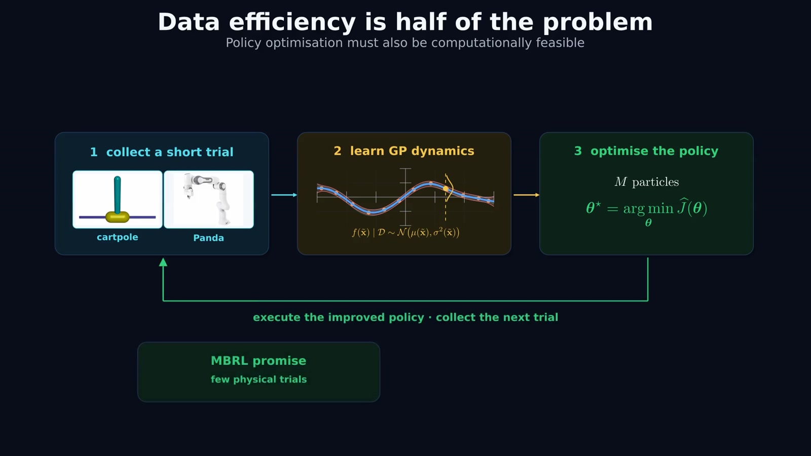
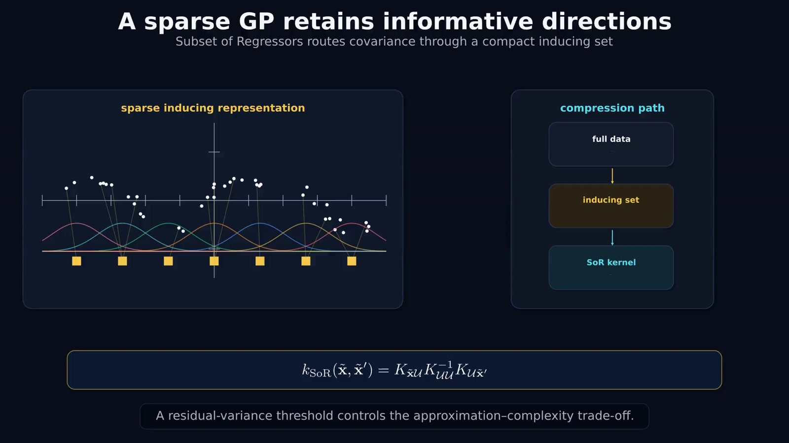
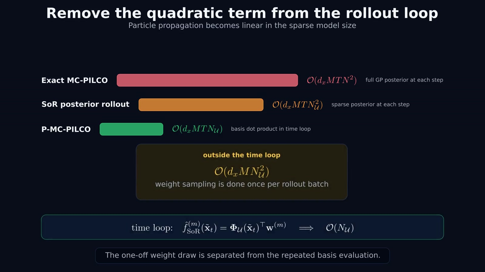
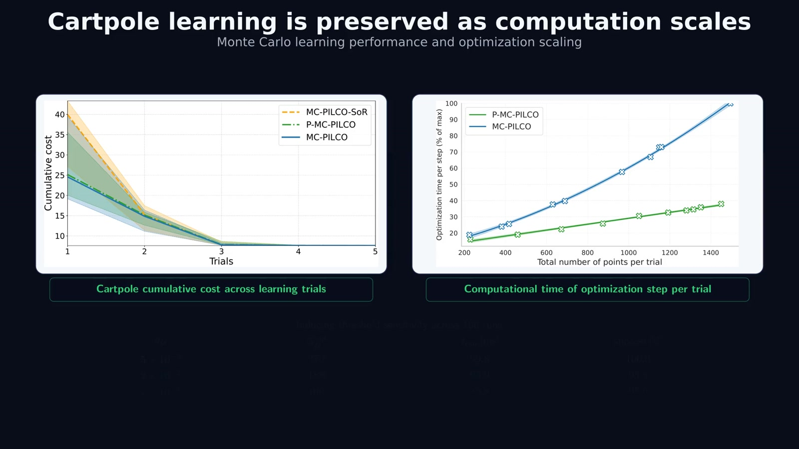
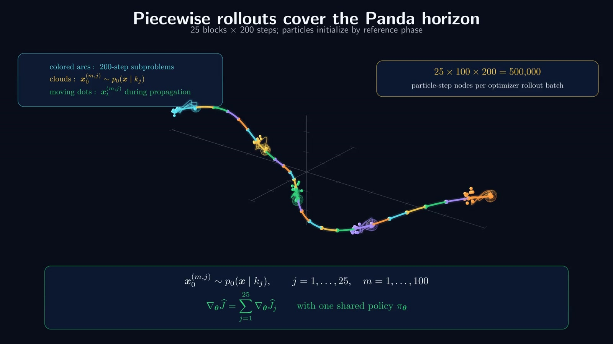
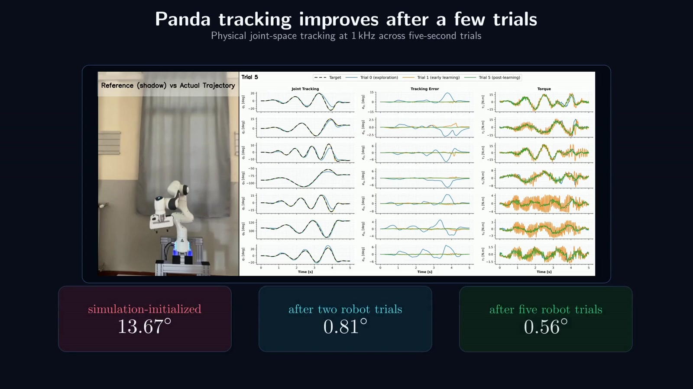

Robot data are expensive. Repeated GP predictions are expensive too.
Model-based reinforcement learning uses a learned dynamics model to improve a controller before the next robot trial. A Gaussian Process (GP) is useful when data are scarce: it predicts what the robot may do and represents uncertainty about that prediction.
MC-PILCO evaluates a policy by propagating many possible trajectories, or particles, through the GP model. Long horizons, many particles, and a growing dataset make repeated posterior-variance calculations costly. P-MC-PILCO moves this uncertainty sampling outside the rollout time loop.

Sample a plausible dynamics function once, then reuse it throughout a particle’s trajectory. Different particles carry different plausible models.
Keep informative directions in the data
A Subset of Regressors (SoR) approximation expresses the GP through a compact set of inducing inputs $U$. These inputs define a smaller family of basis functions; the observations still inform its posterior. This is different from simply discarding all observations except a small training subset.

The greedy selection rule asks whether a candidate input adds a direction that the current set cannot already explain. Its residual prior variance is
A smaller threshold retains more inducing inputs and improves approximation fidelity, at greater computational cost. A larger threshold gives a smaller model. The threshold is therefore an explicit accuracy–computation choice.
One weight sample defines one coherent rollout
The finite-rank SoR GP has an equivalent parametric representation. For each output dimension $j$, a basis vector $\phi_U(z)$ is combined with a Gaussian posterior over weights:
Here $L_jL_j^\top=\Sigma_{w_j}$ and $\epsilon_j^{(m)}$ is a standard Gaussian draw. Sample one weight vector per particle and per model output, then hold it fixed over time. A particle repeatedly evaluates the same sampled function as its state changes.

An uncertain model error persists along a rollout instead of being independently redrawn at each state. The samples are consistent with the approximate SoR posterior. This does not make SoR identical to the original exact GP; any separate process noise is a distinct uncertainty source.
With the sampled weights fixed, the controller can be optimized by differentiating the accumulated cost through the simulated trajectories. Conditional on the sampled model and initial state, propagation is deterministic when no additional process noise is included.
Remove the quadratic term from repeated propagation
Let $N$ be the number of observations, $N_U$ the number of inducing inputs, $M$ the number of particles, $T$ the rollout length, and $d_x$ the number of modeled outputs. The presentation distinguishes three propagation costs:
| Representation | Repeated propagation cost |
|---|---|
| Exact GP posterior queries | $\mathcal O(d_xMTN^2)$ |
| SoR posterior queries | $\mathcal O(d_xMTN_U^2)$ |
| P-MC-PILCO sampled functions | $\mathcal O(d_xMTN_U)$ |

The one-off weight draw costs $\mathcal O(d_xMN_U^2)$ per rollout batch after the posterior factorization is available. Model fitting and factorization also have a cost. The claim is therefore a reduction in the repeated rollout computation, rather than linear complexity for the entire learning pipeline.
Preserve learning while making policy search more practical
The cart-pole comparison examines both learning performance and policy-optimization time. The cost curves show comparable learning behavior for the tested GP representations, while optimization time grows more slowly for P-MC-PILCO as the particle count increases.

High-frequency tracking on a real Franka Emika Panda
The Panda experiment uses a shared neural tracking policy at 1 kHz. A five-second reference contains 5,000 control steps. Policy optimization divides it into 25 subproblems of 200 steps, with 100 particles initialized around the reference phase of each subproblem.

| Stage | Reported angular error |
|---|---|
| Simulation-initialized policy | 13.67° |
| After two robot trials | 0.81° |
| After five robot trials | 0.56° |
The animation reports these angular tracking-error values without defining their aggregation in the final slide. They are retained as reported values here, rather than relabeled as RMSE or maximum error.

Watch the Panda experiment
Reference and measured trajectories, tracking errors, and commanded torques during execution.
Data-efficient learning with cheaper uncertainty propagation
P-MC-PILCO combines a compact GP approximation with posterior function sampling. Its contribution is to make the many model evaluations inside policy optimization less expensive while retaining a distribution of plausible dynamics. The Panda experiment connects that computational change to a demanding physical tracking task.
The marine-control application has its own MANTA Control page, where the focus is the feedback design, learned underwater dynamics, and transfer to unseen reference trajectories.